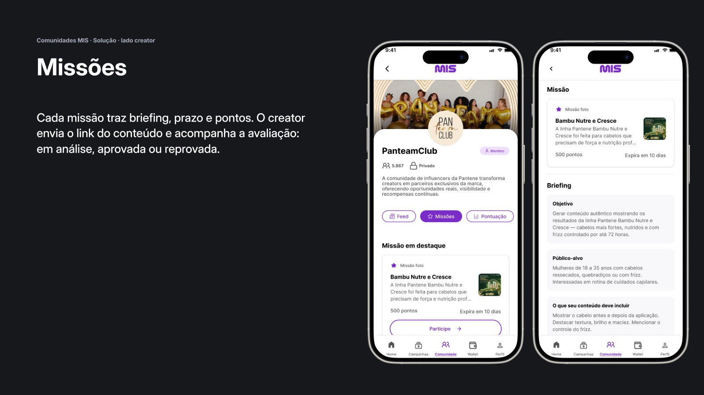
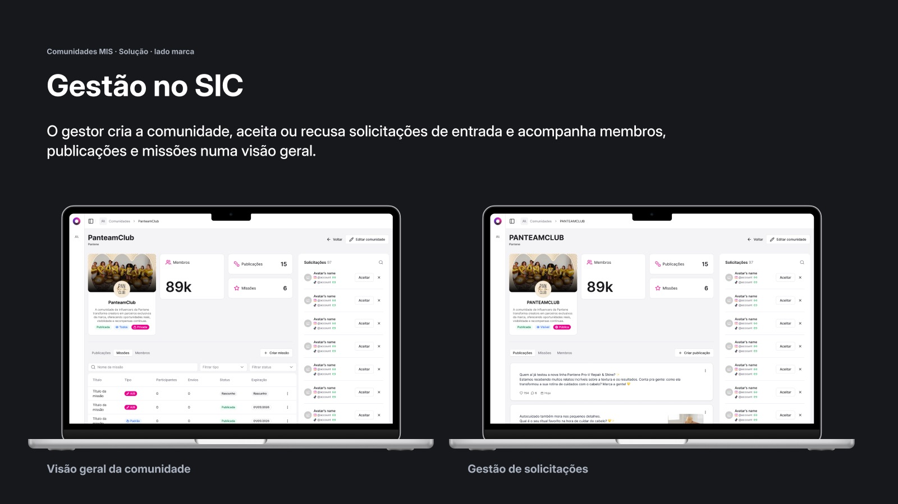
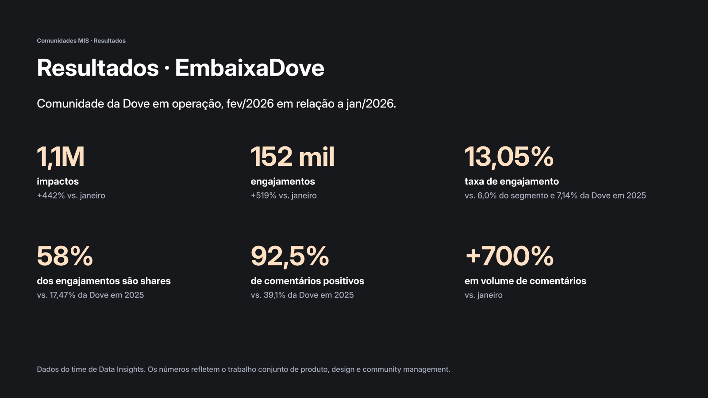

BR Media · App MIS
Comunidades: um espaço contínuo entre marcas e creators
Uma feature criada do zero, com dois lados: o app do creator (MIS) e o painel da marca (SIC). Hoje ela roda para Dove, Pantene e Cetaphil.

01 · Contexto
De campanhas pontuais a uma relação contínua
O MIS é o app da BR Media que conecta marcas a influenciadores e microinfluenciadores. Até então, a relação acontecia por campanhas: a marca convidava, o creator entregava e a ação terminava.
Meu papel: Product Designer da feature de Comunidades, do conceito ao handoff, nos dois lados do produto: a experiência do creator no app MIS e o painel de gestão da marca no SIC.
02 · Problema
Campanhas pontuais não criam vínculo
Quando a entrega terminava, a marca perdia o contato com os creators e a próxima ação começava do zero.
- Para o creator: um motivo para voltar, com missões, conversa e reconhecimento.
- Para a marca: controle sobre membros, entregas e resultados.
- Para a BR Media: um produto replicável, que se configura para cada nova marca.
03 · Processo
Um produto, dois lados
O mesmo conceito precisava funcionar em duas interfaces: mobile para quem cria conteúdo e web para quem administra a comunidade.
- Mapear papéis: quem é o creator, quem é o gestor e o que cada um pode fazer
- Desenhar os fluxos de ponta a ponta: descoberta, entrada, feed, missão, entrega e pontuação
- Benchmarking de redes sociais para comentários, respostas e reações
- Regras de negócio (elegibilidade, status, níveis e estados vazios) documentadas no Figma
- Componentes próprios e specs para o time de tecnologia
04 · Solução
Creator no app, marca no painel
Lado creator · app MIS
- Descoberta: a comunidade aparece na Home e ganha um menu próprio.
- Entrada: comunidades privadas por convite ou solicitação, com status visível.
- Feed: posts da marca com curtidas e comentários, entre uma missão e outra.
- Missões: briefing, prazo e pontos; a entrega fica em análise, aprovada ou reprovada.
- Pontuação e ranking: quatro níveis com prêmios definidos pela marca.
Lado marca · SIC
- Criar a comunidade, aprovar solicitações e acompanhar membros, publicações e missões numa visão geral.
- Criar missões com nome, prazo, pontos, tipo e briefing. Cada campo do SIC tem reflexo direto no app do creator.
- Segmentação de público e testes A/B para pesquisas e campanhas.

Evolução depois do lançamento: comentários em fio, central de notificações, pesquisas no app (integração com o Formbricks), navegação em abas e um teste A/B na tela de missão, com uma hipótese por variável (briefing, tipo de conteúdo, imagem e descrição).
05 · Resultados
EmbaixaDove: fev/2026 vs. jan/2026
O produto está no ar em formatos diferentes: EmbaixaDove como app próprio da marca, e PanteamClub e Cetaphil Checkin dentro do MIS. Os números são do time de Data Insights e refletem o trabalho conjunto de produto, design e community management.

06 · Aprendizados
O que levo deste projeto
- Dois lados, um sistema. Cada decisão no app tinha reflexo no painel da marca; desenhar os dois juntos evitou retrabalho.
- Regras antes de telas. Pontuação, níveis, elegibilidade e status precisavam estar claros para o produto escalar entre marcas.
- Testar uma coisa de cada vez. Separar as variáveis da missão mostra o que de fato muda o comportamento do creator.
Próximos passos: medir a saúde do produto, não só da campanha: ativação de creators acima de 60%, primeira missão entregue em até 7 dias e retenção acima de 40% do mês 1 para o mês 2.
Próximo projeto
GloboPop · Feed anônimo
BR Media · MIS app
Communities: an ongoing space between brands and creators
A feature built from scratch, with two sides: the creator app (MIS) and the brand panel (SIC). It now runs for Dove, Pantene and Cetaphil.
01 · Context
From one-off campaigns to an ongoing relationship
MIS is BR Media’s app that connects brands with influencers and micro-influencers. Until then, the relationship happened through campaigns: the brand invited, the creator delivered and the action ended.
My role: Product Designer for the Communities feature, from concept to handoff, on both sides of the product: the creator experience in the MIS app and the brand management panel in SIC.
02 · Problem
One-off campaigns don’t build a bond
Once the delivery was done, the brand lost touch with the creators and the next action started from zero.
- For the creator: a reason to come back, with missions, conversation and recognition.
- For the brand: control over members, deliveries and results.
- For BR Media: a repeatable product that can be configured for each new brand.
03 · Process
One product, two sides
The same concept had to work in two interfaces: mobile for content creators and web for whoever manages the community.
- Map roles: who the creator is, who the manager is and what each one can do
- Design the flows end to end: discovery, joining, feed, mission, delivery and points
- Benchmark social networks for comments, replies and reactions
- Business rules (eligibility, statuses, levels and empty states) documented in Figma
- Custom components and specs for the engineering team
04 · Solution
Creators in the app, brands in the panel
Creator side · MIS app
- Discovery: the community shows up on the Home and gets its own menu.
- Joining: private communities by invite or request, with a visible status.
- Feed: brand posts with likes and comments, between one mission and the next.
- Missions: briefing, deadline and points; the delivery is in review, approved or rejected.
- Points and ranking: four levels with prizes set by the brand.
Brand side · SIC
- Create the community, approve join requests and follow members, posts and missions in an overview.
- Create missions with name, deadline, points, type and briefing. Every SIC field has a direct effect in the creator app.
- Audience segmentation and A/B tests for surveys and campaigns.
Evolution after launch: threaded comments, a notification center, in-app surveys (Formbricks integration), tab navigation and an A/B test on the mission screen, with one hypothesis per variable (briefing, content type, image and description).
05 · Results
EmbaixaDove: Feb/2026 vs. Jan/2026
The product is live in different formats: EmbaixaDove as the brand’s own app, and PanteamClub and Cetaphil Checkin inside MIS. The numbers come from the Data Insights team and reflect the joint work of product, design and community management.
06 · Learnings
What I take from this project
- Two sides, one system. Every decision in the app had an effect on the brand panel; designing both together avoided rework.
- Rules before screens. Points, levels, eligibility and statuses had to be clear for the product to scale across brands.
- Test one thing at a time. Separating the mission’s variables shows what really changes creator behavior.
Next steps: measure the health of the product, not just the campaign: creator activation above 60%, first mission delivered within 7 days and retention above 40% from month 1 to month 2.
Next project
GloboPop · Anonymous feed